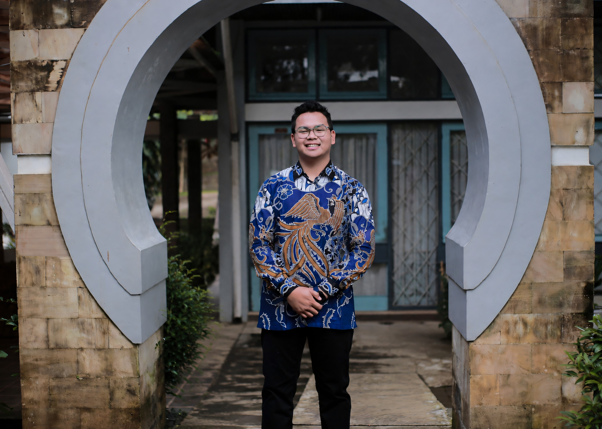

01
Directing & Production
Concept development, scriptwriting, talent coaching, camera framing, lighting, green-screen setup, and wireless audio systems.
OPEN FOR CREATIVE & DIGITAL MEDIA ROLES
S.Kom. · Creative Multimedia Specialist, Video Editor & Digital Media Lead
I bridge visual storytelling and technical execution—from directing, lighting, and video editing to multi-input OBS live streaming, web systems, and digital-media operations.

UPLOAD YOUR PHOTO TOassets/profile.jpg
A Data Science & Computer Science graduate (GPA 3.62) combining technical IT problem-solving with 5+ years of end-to-end video production, directing, editing, and digital media experience.
As Head of Video Editing & Media, I manage full production lifecycles: scripting, lighting, talent direction, post-production, and complex multi-input OBS streaming. I also build high-retention short-form content, manage social channels, and maintain IT and web infrastructure.
Concept development, scriptwriting, talent coaching, camera framing, lighting, green-screen setup, and wireless audio systems.
Short- and long-form editing, color correction, audio cleaning, SFX mixing, thumbnails, flyers, and social graphics.
Multi-input OBS operations across cameras, audio, screens, layers, and cross-PC systems with live troubleshooting.
Brand development, content strategy, audience analytics, web systems, hardware maintenance, and digital asset management.
Manage web systems, maintain IT hardware, and lead foundation video documentation and digital-asset updates.
Led editing and design teams, directed studio workflows, and served as Technical Lead for YouTube live streaming via OBS.
Conducted market audience research and created data-backed short-form content to optimise engagement.
Supported the transformation of an online thrift business into an independent apparel brand through branding, content production, product photography, operational support, and business development activities.
Managed outreach channels, promotional assets, carousels, interactive stories, and event after-movies; also served as Vice Chairman.
LET'S BUILD SOMETHING THAT CONNECTS
Available for creative multimedia, video editing, digital media, and collaboration opportunities.